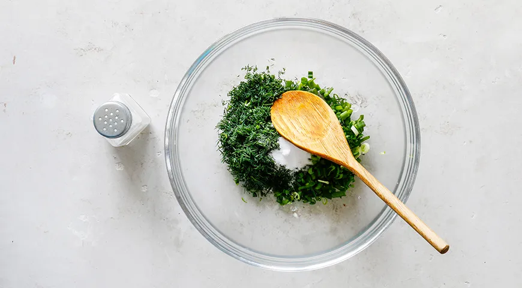
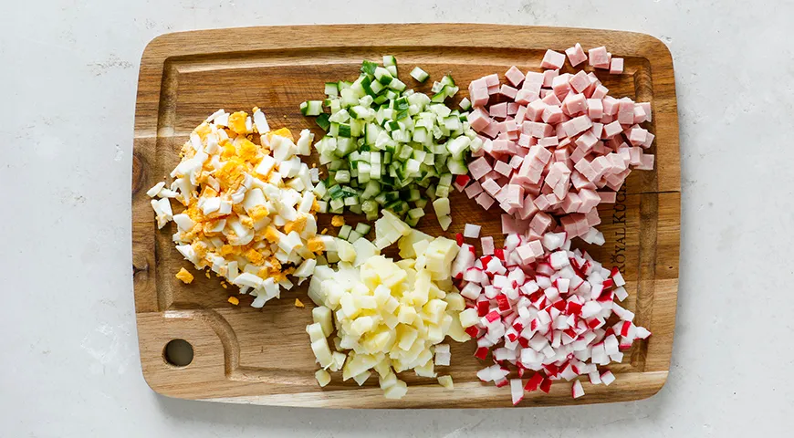
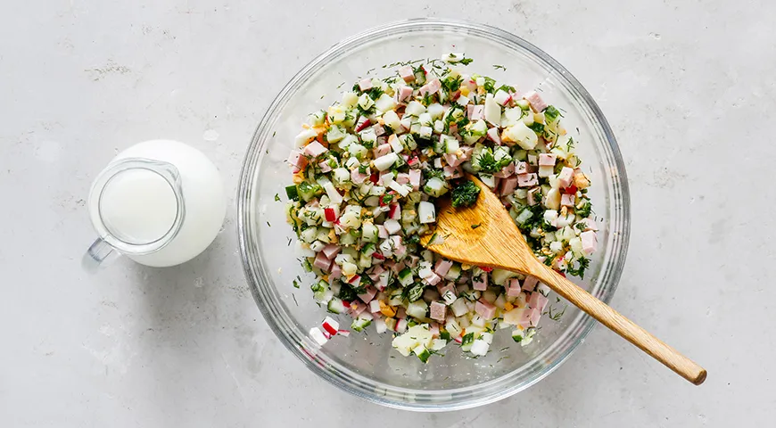
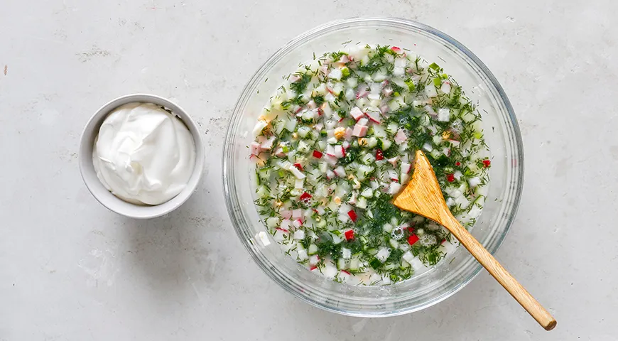
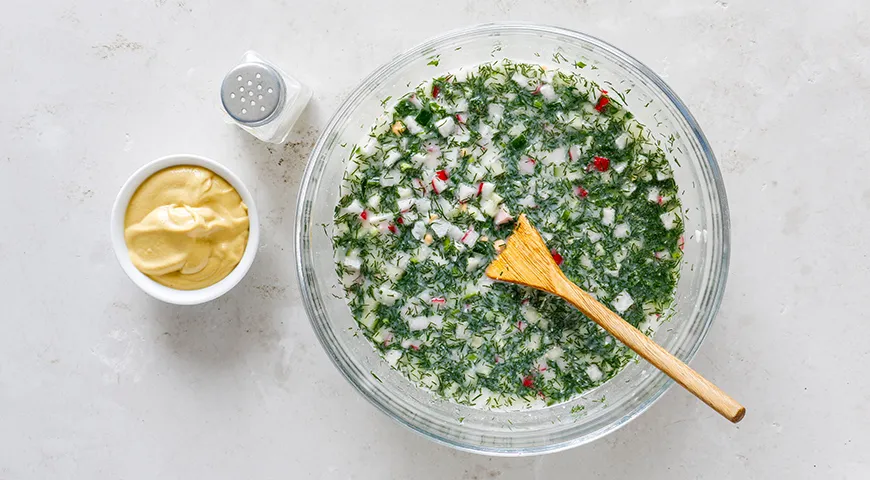

歴史
History
オクロシカの名は、「細かく刻む」を意味するロシア語の動詞「крошить（クロシーチ）」に由来します。十八世紀の料理書にはすでにその名が見られ、農民から貴族まで幅広く親しまれてきた、ロシアを代表する夏の定番料理です。
もともとは、ライ麦から作られる発酵飲料クワスを注いで食べる料理でしたが、地域によってはケフィアや酸乳、そして今回のように乳清を使ったものも古くから親しまれてきました。なかでも乳清を用いる伝統は、チーズ作りが盛んなヴォルガ川流域の農村に深く根付いており、食材を無駄なく生かす暮らしの知恵として受け継がれています。
材料
Ingredients — 4人前
乳清（ホエー）
1.5L
冷やしておく
きゅうり
3-4本
ラディッシュ
8個
ゆで牛肉
300ｇ
ゆで卵
4個
ゆでじゃがいも
4個
細ねぎ
1束
ディル
1束
パセリ
1束
塩
0.5小さじ
砂糖
0.5小さじ
辛子
0.5小さじ
サワークリーム
4コップ
仕上げに
作り方
Instructions
一
ステップ1
ホエーのオクロシカを作る際は、ディルや青ねぎなどの香味野菜を細かく刻み、器に入れて塩を振り、木べらで軽くすりつぶします。こうすることで、香味野菜のうま味と香りがよりよく引き出されます。
2分
Зелень二

Нарезкаステップ２
きゅうり、ラディッシュ、肉（またはソーセージやウインナー）、ゆで卵、じゃがいもを角切りまたは細切りにし、刻んだ野菜に加えます。
10分三
ステップ3
下ごしらえした具材に冷やしたホエーを注ぎ、よく混ぜます。お好みで炭酸水を少量加えてもよいでしょう。
5分
Перемешать四

Заправкаステップ4
仕上げにサワークリームを加えます。サワークリームを加えることで、風味が増し、オクローシカにコクと食べ応えが生まれます。
1分五
ステップ5
ホエーで作ったオクローシカにサワークリームを加えたら、塩で味を調え、お好みで西洋わさび（ホースラディッシュ）やマスタードを加えてよく混ぜます。冷蔵庫で約2時間冷やした後、器に盛り付けてお召し上がりください。
2時
One more thing